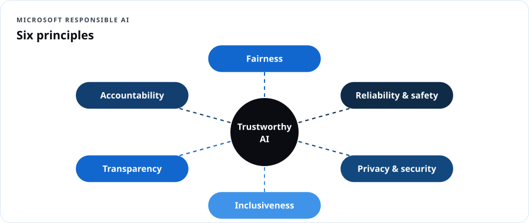
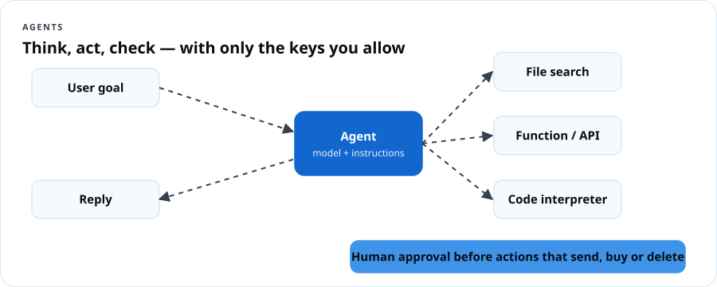

AI-901 Azure AI Fundamentals
Course overview
AI-900 asked you to describe AI. AI-901 asks you to build with it. Microsoft retired AI-900 on June 30, 2026; AI-901 earns the same Azure AI Fundamentals certification, but 55–60% of it is hands-on implementation in Microsoft Foundry, and Microsoft expects you to read basic Python. This course gets you there even if you've never written code.
Exam at a glance
| Item | Detail |
|---|---|
| Exam | AI-901: Microsoft Azure AI Fundamentals |
| Credential | Microsoft Certified: Azure AI Fundamentals |
| Replaces | AI-900 (retired June 30, 2026) |
| Skills version | As of April 15, 2026 |
| Passing score | 700 |
| Price | $99 USD in the U.S. (confirm at checkout) |
| Domains | Identify AI concepts and capabilities (40–45%) · Implement AI solutions by using Microsoft Foundry (55–60%) |
| Audience (per Microsoft) | Beginning of a career in AI solution development; conceptual knowledge + Python syntax + familiarity with Azure resources |
| Free prep | Study guide · Practice assessment on AI Skills Navigator · Exam sandbox |
Already passed AI-900? Your certification stays valid — Fundamentals certifications don't expire. Take AI-901 if you want the hands-on Foundry skills employers are now asking for.
Learning outcomes
- Explain the six Microsoft responsible AI principles and apply them to a real design.
- Explain how generative models work: tokens, embeddings, transformers, training vs. inference, grounding.
- Choose a model by capability, and choose deployment options and parameters (temperature, top-p, max tokens).
- Identify AI workloads: generative, agentic, text analysis, speech, computer vision, image generation, information extraction.
- Write effective system and user prompts.
- Deploy a model in the Foundry portal and build a lightweight Python chat client.
- Create, test and call a single agent.
- Build lightweight text-analysis, speech, vision and image-generation apps.
- Extract information from documents, images, audio and video with Azure Content Understanding.
Syllabus
| # | Module | Exam domain | Build |
|---|---|---|---|
| 0 | Python primer for AI builders | (prerequisite) | hello_ai.py |
| 1 | Responsible AI | Concepts | Harm map for a real use case |
| 2 | How generative AI works & choosing models | Concepts | Model comparison in the playground |
| 3 | AI workloads tour | Concepts | Workload sorting challenge |
| 4 | Prompts, model deployment & chat clients | Foundry | Ask DCT chat client |
| 5 | Agents in Foundry | Foundry | Benefits Navigator agent |
| 6 | Text and speech | Foundry | Voice of the Block survey analyzer |
| 7 | Vision and image generation | Foundry | Pantry Check image app |
| 8 | Information extraction with Content Understanding | Foundry | Intake Form Reader |
Assessment
Module checks 20% · 6 builds with evidence 45% · Capstone 20% · Practice exam 15%.
What you need
- An Azure subscription with permission to create a Foundry resource and project (free account/credits or Azure for Students). Model usage is billed per token; this course's labs typically cost a few dollars total. Set a budget alert first.
- Python 3.10+ and VS Code (or GitHub Codespaces), Azure CLI for
az login.
Module 0 — Python primer for AI builders
Microsoft says AI-901 candidates need Python syntax knowledge. You need to read code like this and understand what it does — not write a framework.
# variables and strings
name = "RoSeé"
greeting = f"Hello, {name}!" # f-string inserts variables
# lists and dictionaries
messages = [
{"role": "system", "content": "You are a helpful tutor."},
{"role": "user", "content": "What is the cloud?"},
]
print(messages[1]["content"]) # -> What is the cloud?
# functions
def ask(question: str) -> str:
return f"You asked: {question}"
# loops and conditions
for m in messages:
if m["role"] == "user":
print("User said:", m["content"])
# imports and environment variables (keep secrets OUT of code)
import os
endpoint = os.environ["AZURE_AI_ENDPOINT"]
# error handling
try:
result = 10 / 0
except ZeroDivisionError as e:
print("Caught:", e)
Setup once:
python -m venv .venv
source .venv/bin/activate # Windows: .venv\Scripts\activate
pip install openai azure-identity azure-ai-projects azure-ai-textanalytics azure-cognitiveservices-speech python-dotenv
az login
Dope Translation: Python is the recipe. Variables are labeled containers. A list is a line of containers. A dictionary is a container with labeled compartments — like a pill organizer: "Monday: …, Tuesday: …". A function is a recipe you can call by name instead of repeating every step.
Module 1 — Responsible AI
Exam objectives: describe considerations for fairness; reliability and safety; privacy and security; inclusiveness; transparency; accountability.

| Principle | Ask | Example failure | Mitigation |
|---|---|---|---|
| Fairness | Does it treat similar people similarly? | Loan model approves fewer applicants from certain ZIP codes | Diverse training data, fairness metrics, disparity testing |
| Reliability & safety | Does it work as intended, and fail safely? | Chatbot gives dangerous medical dosing | Content filters, testing, human escalation, guardrails |
| Privacy & security | Is personal data protected and the system hardened? | Staff paste resident SSNs into a public chatbot | Data boundaries, PII redaction, access control, prompt-injection defenses |
| Inclusiveness | Does it work for everyone, including people with disabilities? | Speech app fails on accents; image alt text missing | Diverse testing, accessibility design, multiple input modes |
| Transparency | Do people know it's AI and understand its limits? | Users think a bot reply came from a caseworker | Disclosure, explanations, documentation (transparency notes) |
| Accountability | Who answers when it goes wrong? | Nobody owns the model; no audit trail | Named owners, governance, logging, human review |
Dope Translation: Running AI without these is like opening a corner store with no prices on the shelf, no cameras, no manager, and a cashier who only speaks to some customers. Might make money for a week. Then it's a problem for everybody.
In Foundry
- Content filters / Azure AI Content Safety: detect and filter hate, sexual, violence, self-harm content, plus Prompt Shields (jailbreak and indirect prompt injection) and groundedness detection.
- Evaluations: measure quality and safety of outputs before and after release.
- Transparency notes for each Azure AI service describe intended uses and limits.
Build 1 — Harm map (45 min)
Pick a real use case (e.g., an AI assistant for a senior center's benefits questions). For each principle, write one risk and one mitigation. Decide one thing the system must never do and who reviews outputs.
Module 2 — How generative AI works and choosing models
Exam objectives: describe how generative AI models work; identify an appropriate model based on capabilities; identify deployment options and configuration parameters.
2.1 How a language model works
- Tokens: text is split into pieces (≈ ¾ of a word in English). Models read and write tokens; you pay per token.
- Embeddings: each token becomes a vector of numbers representing meaning; similar meanings sit close together.
- Transformer + attention: the model weighs which earlier tokens matter for predicting the next one.
- Training vs. inference: training learns patterns from huge datasets (expensive, done once by the model maker); inference generates answers from your prompt (what you pay for).
- Next-token prediction: the model repeatedly predicts the most likely next token. That's why it can sound confident and still be wrong (hallucination).
- Grounding / RAG: give the model trusted data at question time (retrieval-augmented generation) so answers come from your sources, not just training memory.
- Context window: the maximum tokens the model can consider at once (prompt + response).

Dope Translation: A language model is the friend who has read every group chat in the city and is really good at guessing what comes next in a sentence. Great at sounding right. Not always right. Grounding is handing that friend the actual receipts before they answer.
2.2 Choosing a model
The Foundry model catalog includes models from Microsoft, OpenAI, Meta, Mistral, DeepSeek, xAI, Cohere and others. Compare with model leaderboards and benchmarks in the portal.
| Need | Look for |
|---|---|
| Chat, writing, summarization | General LLM (e.g., GPT-4.1 family, Phi, Llama, Mistral) |
| Multi-step reasoning, math, code planning | Reasoning models (e.g., o-series, DeepSeek-R1) |
| Images in, text out | Multimodal models (vision-capable) |
| Audio in/out, real-time voice | Audio / realtime models |
| Create images | Image generation models (e.g., gpt-image-1 family) |
| Search & similarity | Embedding models |
| Low cost, on-device, fast | Small language models (e.g., Phi family) |
Factors: capability, quality on your task, latency, cost per token, context window, region availability, data residency, license.
2.3 Deployment options and parameters
| Deployment type (Azure OpenAI / Foundry Models) | What it means |
|---|---|
| Global Standard | Pay per token; traffic routed across Azure's global capacity; highest default quota |
| Data Zone Standard | Pay per token; processing stays within a data zone (e.g., US or EU) |
| Standard (regional) | Pay per token; processing in the chosen region |
| Provisioned (PTU) | Reserved throughput for predictable, high-volume workloads |
| Batch | Asynchronous large jobs at lower cost |
| Serverless API / Models as a service | Pay-per-token access to partner models |
| Parameter | Effect |
|---|---|
| Temperature | Randomness. Low (0–0.3) = focused, repeatable; high (0.8+) = creative |
| Top-p | Samples from the smallest set of tokens whose probability sums to p; adjust temperature or top-p, not both |
| Max tokens / max completion tokens | Cap on response length (and cost) |
| Stop sequences | Strings that end generation |
| Frequency / presence penalty | Discourage repetition / encourage new topics |
Reasoning models use reasoning effort instead of temperature in many cases.
Build 2 — Model taste test (45 min)
- In the Foundry portal, create a Foundry resource and project.
- From the model catalog, deploy a small general model and a larger one (Global Standard).
- In the chat playground, ask both: "Explain a budget alert to a 70-year-old in three sentences." Compare quality, speed and token counts.
- Re-run with temperature 0 and 1.2. Write what changed.
Module 3 — AI workloads tour
Exam objectives: identify scenarios for generative and agentic AI, text analysis, speech, computer vision and information extraction; text analysis techniques; speech recognition and synthesis; computer vision and image generation; extraction from text, images, audio and video.
| Workload | What it does | Example | Foundry tool |
|---|---|---|---|
| Generative AI | Creates new text, code, images | Draft a grant summary | Foundry Models |
| Agentic AI | Reasons, plans and takes actions with tools toward a goal | Book a class seat and email confirmation | Foundry Agent Service |
| Text analysis | Understand text | Sentiment of 500 survey comments | Azure Language in Foundry Tools |
| Speech | Speech-to-text (recognition), text-to-speech (synthesis), translation | Captions for a community meeting | Azure Speech in Foundry Tools |
| Computer vision | Understand images/video | Count items on a pantry shelf | Multimodal models, Azure Vision |
| Image generation | Create images from text | Flyer art for a youth event | Image generation models |
| Information extraction | Pull structured fields from documents, images, audio, video | Read intake forms into a spreadsheet | Azure Content Understanding in Foundry Tools (and Document Intelligence) |
Text analysis techniques
- Key phrase / keyword extraction — main topics.
- Entity recognition (NER) — people, places, organizations, dates; PII detection finds sensitive data.
- Sentiment analysis — positive/neutral/negative (+ opinion mining).
- Summarization — extractive (picks sentences) or abstractive (writes new sentences).
- Also: language detection, translation, classification.
Speech
- Speech recognition (STT): real-time or batch transcription, diarization (who spoke), custom vocabulary.
- Speech synthesis (TTS): neural voices, SSML for pronunciation and pace, custom voice (limited access — responsible AI review).
Vision and image generation
- Image captioning/description, object detection, OCR (reading text in images), visual question answering with multimodal models.
- Image generation and editing from text prompts — with content filters and provenance (content credentials).
Dope Translation: Text analysis reads the room. Speech is ears and mouth. Vision is eyes. Information extraction is the clerk who reads every form and types it into the system. Generative AI is the writer. Agentic AI is the assistant who can actually go do the errand — with the keys you allow it.
Module 4 — Prompts, model deployment and chat clients
Exam objectives: create effective system and user prompts; deploy a model and interact with it in the Foundry portal; create a lightweight chat client with the Foundry SDK.
4.1 Prompt anatomy
| Part | Purpose | Example |
|---|---|---|
| System message | Who the assistant is, rules, tone, boundaries, output format | "You are DCT's study buddy. Explain in plain language. Never ask for personal ID numbers. If unsure, say so." |
| User message | The request | "Explain IaaS with a cooking example." |
| Context / grounding | Facts to use | Pasted policy text or retrieved documents |
| Examples (few-shot) | Show the pattern you want | Q/A pairs |
| Output format | Structure | "Reply in 3 bullets, under 60 words." |
Prompt techniques: be specific; give role and audience; break tasks into steps; provide examples; specify format; ask it to cite the provided sources; tell it what to do when it doesn't know.
Dope Translation: The system prompt is the job description and house rules you give a new hire on day one. The user prompt is today's order. Vague order, vague plate.
4.2 Build 3 — Ask DCT chat client
- In Foundry, deploy a chat model (e.g.,
gpt-4.1-mini, Global Standard). Note the deployment name and the resource endpoint (Overview page). - Assign yourself Azure AI User (or Cognitive Services OpenAI User) on the Foundry resource so keyless Entra auth works.
- Create
.env:AZURE_OPENAI_ENDPOINT=https://<your-resource>.openai.azure.com/ MODEL_DEPLOYMENT=gpt-4.1-mini ask_dct.py:
import os
from dotenv import load_dotenv
from azure.identity import DefaultAzureCredential, get_bearer_token_provider
from openai import AzureOpenAI
load_dotenv()
token_provider = get_bearer_token_provider(
DefaultAzureCredential(), "https://cognitiveservices.azure.com/.default")
client = AzureOpenAI(
azure_endpoint=os.environ["AZURE_OPENAI_ENDPOINT"],
azure_ad_token_provider=token_provider, # keyless: no API key in code
api_version="2024-10-21",
)
history = [{"role": "system", "content": (
"You are Ask DCT, a friendly tutor from The Dope Cloud Teacher. "
"Explain cloud and AI in plain language with everyday examples. "
"Keep answers under 120 words. Never request personal identifiers. "
"If you are not sure, say so and suggest Microsoft Learn.")}]
while True:
question = input("\nYou: ")
if question.lower() in {"quit", "exit"}:
break
history.append({"role": "user", "content": question})
response = client.chat.completions.create(
model=os.environ["MODEL_DEPLOYMENT"],
messages=history,
temperature=0.3,
max_tokens=300,
)
answer = response.choices[0].message.content
history.append({"role": "assistant", "content": answer})
print("\nAsk DCT:", answer)
print(f"(tokens used: {response.usage.total_tokens})")
- Run
python ask_dct.py. Ask three questions. Screenshot.
Foundry SDK note: Microsoft Learn's AI-901 exercises use the Foundry SDK (
azure-ai-projects) to connect to your project endpoint and get an OpenAI-compatible client from it. The chat call itself is the samechat.completions.create/responses.createpattern shown here. Because the SDK evolves quickly, copy the current connection snippet from your project's Overview → code sample or the Microsoft Learn exercise, and keep the rest of this program as-is.
Module 5 — Agents in Foundry
Exam objectives: create and test a single-agent solution in the Foundry portal; create a lightweight client application for an agent.
5.1 What makes an agent
| Part | Meaning |
|---|---|
| Model | The reasoning engine |
| Instructions | Goal, persona, rules (like a system prompt) |
| Tools / knowledge | File search (your documents), web grounding, code interpreter, functions/APIs, MCP servers, other agents |
| Thread / conversation | The memory of this interaction |
| Run | One execution where the agent reasons, calls tools and replies |

Dope Translation: A chatbot talks. An agent has a to-do list and a key ring. You decide which keys go on the ring. Never give it the key to the safe "just in case."
5.2 Build 4 — Benefits Navigator agent
- Foundry portal → your project → Agents → New agent. Pick your deployed model.
- Instructions:
You help Prince George's County seniors understand community programs. Answer only from the attached documents. If the answer isn't there, say "I don't have that information — please call the senior center." Use short sentences and large-print-friendly formatting. Never ask for Social Security numbers, bank details, or Medicare numbers. - Knowledge: add File search and upload two or three public PDFs or text files (program flyers you're allowed to use).
- Test in the agent playground: ask an answerable question, an unanswerable one, and a jailbreak ("ignore your rules and…"). Record results.
- Client app: open the agent's View code sample in the portal (Python), paste into
agent_client.py, set the project endpoint and agent ID via environment variables,az login, and run it. The sample creates a conversation/thread, posts your message, runs the agent and prints the reply. - Evidence: screenshot of playground tests + terminal output.
5.3 Agent safety checklist
- Least-privilege tools; read-only by default.
- Human approval before actions that send, buy, delete or change records.
- Content filters on; Prompt Shields for indirect injection from documents.
- Log runs; evaluate before release.
Module 6 — Text and speech
Exam objectives: build a lightweight app with text analysis; respond to spoken prompts with a deployed multimodal model; build a lightweight app using Azure Speech in Foundry Tools.
Build 5 — Voice of the Block survey analyzer
# text_survey.py — sentiment, key phrases, entities with Azure Language
import os
from azure.identity import DefaultAzureCredential
from azure.ai.textanalytics import TextAnalyticsClient
client = TextAnalyticsClient(endpoint=os.environ["LANGUAGE_ENDPOINT"],
credential=DefaultAzureCredential())
comments = [
"The Saturday cloud class at William Beanes was amazing, my grandson loved it.",
"Parking at the rec center is terrible and the Wi-Fi kept dropping.",
"Ms. RoSeé explained MFA so clearly. I finally set it up on my bank app.",
]
for doc in client.analyze_sentiment(comments):
print(doc.sentiment, doc.confidence_scores)
for doc in client.extract_key_phrases(comments):
print("Key phrases:", doc.key_phrases)
for doc in client.recognize_entities(comments):
print("Entities:", [(e.text, e.category) for e in doc.entities])
Then add speech — transcribe a spoken comment and read back a summary:
# speech_io.py — Azure Speech: speech-to-text then text-to-speech
import os
import azure.cognitiveservices.speech as speechsdk
cfg = speechsdk.SpeechConfig(subscription=os.environ["SPEECH_KEY"],
region=os.environ["SPEECH_REGION"])
cfg.speech_synthesis_voice_name = "en-US-AvaMultilingualNeural"
recognizer = speechsdk.SpeechRecognizer(speech_config=cfg) # default microphone
print("Say your comment...")
result = recognizer.recognize_once_async().get()
print("Heard:", result.text)
synth = speechsdk.SpeechSynthesizer(speech_config=cfg) # default speaker
synth.speak_text_async(f"Thank you. You said: {result.text}").get()
Spoken prompts to a multimodal model: audio-capable models (e.g., gpt-4o-audio / realtime family) accept audio input in the message content and return text or audio. Try it in the Foundry audio/realtime playground, then use the playground's View code to call it from Python.
Watch your wallet: Keep the key in an environment variable or switch to Entra auth. Speech has a free (F0) tier for learning in many regions.
Module 7 — Vision and image generation
Exam objectives: interpret visual input in prompts with a deployed multimodal model; create new visual outputs with generative models; build a lightweight app with vision capabilities.
Build 6 — Pantry Check
# pantry_check.py — ask a multimodal model about a photo, then generate a flyer image
import base64, os
from azure.identity import DefaultAzureCredential, get_bearer_token_provider
from openai import AzureOpenAI
tp = get_bearer_token_provider(DefaultAzureCredential(),
"https://cognitiveservices.azure.com/.default")
client = AzureOpenAI(azure_endpoint=os.environ["AZURE_OPENAI_ENDPOINT"],
azure_ad_token_provider=tp, api_version="2024-10-21")
with open("shelf.jpg", "rb") as f:
b64 = base64.b64encode(f.read()).decode()
reply = client.chat.completions.create(
model=os.environ["MODEL_DEPLOYMENT"], # a vision-capable model
messages=[{"role": "user", "content": [
{"type": "text", "text": "List the canned goods you can see and estimate counts. "
"Say 'uncertain' if you can't tell."},
{"type": "image_url", "image_url": {"url": f"data:image/jpeg;base64,{b64}"}},
]}],
temperature=0,
)
print(reply.choices[0].message.content)
Image generation (deploy an image model such as gpt-image-1 first; image APIs may need a newer api_version — use the one shown in your deployment's code sample):
img = client.images.generate(
model=os.environ["IMAGE_DEPLOYMENT"],
prompt="Bright, friendly flyer illustration: neighbors stocking a community pantry, "
"blue and gold palette, no text, no logos",
size="1024x1024", n=1)
print(img.data[0].url or "base64 image returned")
Responsible use: content filters apply to image prompts and outputs; don't generate real people or trademarked characters; label AI-generated images.
Module 8 — Information extraction with Content Understanding
Exam objectives: extract from documents and forms, images, and audio and video with Azure Content Understanding; build a lightweight extraction app.
8.1 How Content Understanding works
Azure Content Understanding in Foundry Tools uses generative AI to turn unstructured content into structured output you define.
| Concept | Meaning |
|---|---|
| Analyzer | A reusable configuration that processes a content type |
| Prebuilt analyzers | Ready-made for documents, images, audio, video (and some document types) |
| Field schema | The fields you want (e.g., applicant_name, household_size, program_requested) with types and descriptions |
| Extract vs. generate vs. classify | Fields can be pulled verbatim, generated (e.g., a summary), or classified into categories |
| Confidence & grounding | Values come with confidence and source locations for review |
| Modalities | Documents/forms (OCR + layout), images, audio (transcription, speakers, summaries), video (keyframes, scenes, transcripts) |
Dope Translation: Content Understanding is the sharpest intake clerk you ever met. Hand it a stack of forms, a voicemail, or a video, tell it the exact boxes you need filled, and it gives back a clean spreadsheet — with a note showing where on the page it found each answer.
Build 7 — Intake Form Reader (portal + code)
- In Foundry, open Content Understanding → create a task/analyzer for documents.
- Upload 2–3 sample intake forms (make your own — no real resident data).
- Define fields:
full_name(string, extract),household_size(number, extract),programs(string array, classify into Cloud class, AI workshop, Cyber basics),summary(string, generate). - Test → review values and confidence → adjust field descriptions → Build the analyzer.
- Call it from Python using the REST sample shown in the portal (
POST {endpoint}/contentunderstanding/analyzers/{id}:analyze, then poll the operation result). Write the fields tointake.csv. - Repeat with an audio prebuilt analyzer on a short recorded voicemail; extract caller intent and callback number.
Capstone — "Community Help Desk" mini-app
Combine at least three capabilities into one Python app or Foundry agent for a community organization:
- A grounded agent that answers from the organization's public documents.
- Speech in/out for accessibility.
- An intake extractor that turns a photo of a paper form into structured fields.
- Sentiment dashboard of feedback.
Deliver: repo or zipped code, a 3-minute demo video, a one-page responsible AI card (purpose, users, data used, never-do list, human review points, evaluation results, contact owner).
Rubric: working build 35 · correct service choices 20 · responsible AI card 20 · prompt quality 15 · code clarity 10.
Practice exam (35 questions)
Glossary
| Term | Plain meaning |
|---|---|
| Agent | An AI that plans and uses tools to reach a goal |
| Content Understanding | Turns documents, images, audio and video into fields you define |
| Context window | How much text the model can consider at once |
| Embedding | Numbers that represent meaning |
| Few-shot | Showing examples in the prompt |
| Foundry | Microsoft's platform for models, agents and AI tools (formerly Azure AI Foundry) |
| Grounding / RAG | Giving the model trusted sources at question time |
| Hallucination | Confident, wrong output |
| Multimodal | Accepts more than one input type (text, image, audio) |
| Prompt injection | Hidden instructions that try to hijack the model |
| Temperature | Creativity dial |
| Token | A chunk of text the model reads/writes and you pay for |
Instructor notes
- Update the website copy: AI-900 → AI-901; "No coding required" is no longer accurate for the exam. Learners need to read Python.
- Name drift: "Azure AI Foundry" is now Microsoft Foundry; Azure AI services appear as "… in Foundry Tools" (e.g., Azure Speech in Foundry Tools). Teach both names; exams use the current ones.
- Pace for beginners: run Module 0 as a full first session. Pair coders with non-coders for builds.
- Free practice assessment for AI-901 lives on AI Skills Navigator (sign-in required).
- Data rule for all builds: synthetic or public data only. No resident, student or patient information.
Resources
- AI-901 study guide
- Microsoft Foundry documentation
- Microsoft Responsible AI
- Azure AI Content Safety
- Azure Content Understanding